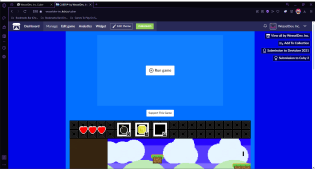

2D-SurvivalCraft
Home
About The Game
Click on trees. Collect sticks and Iron. Craft PickAxe. Press top left button a few times to open and close. While in the menu (top left button) and collected inof iron and sticks press on the pickaxe go out of menu and press on pickaxe and mine the light blocks in the cave.
Where To Play The Game
2D-SurvivalCraft is a browser based game meaning it is played through the browser. 2D-SurvivalCraft supports keyboard/mouse and touch screen.
 Launcher